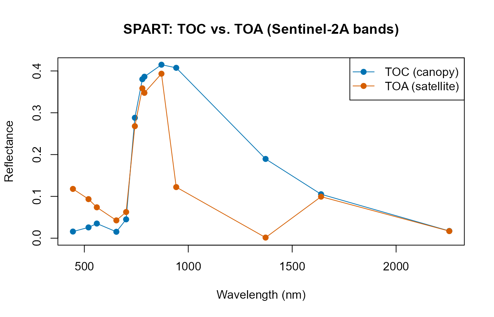
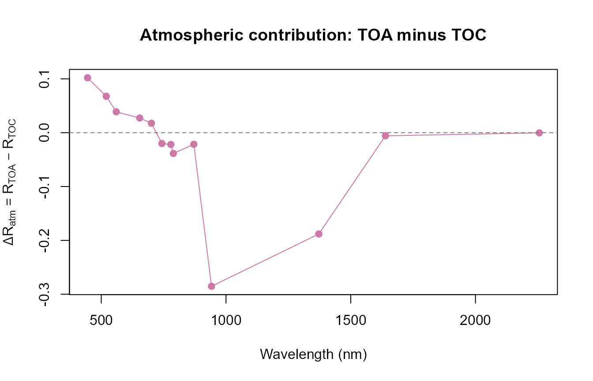
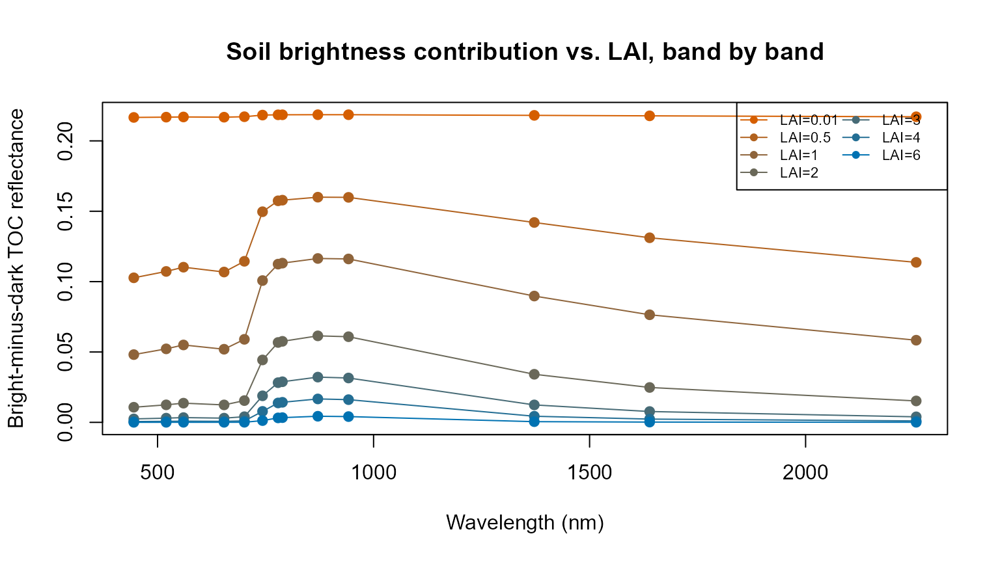
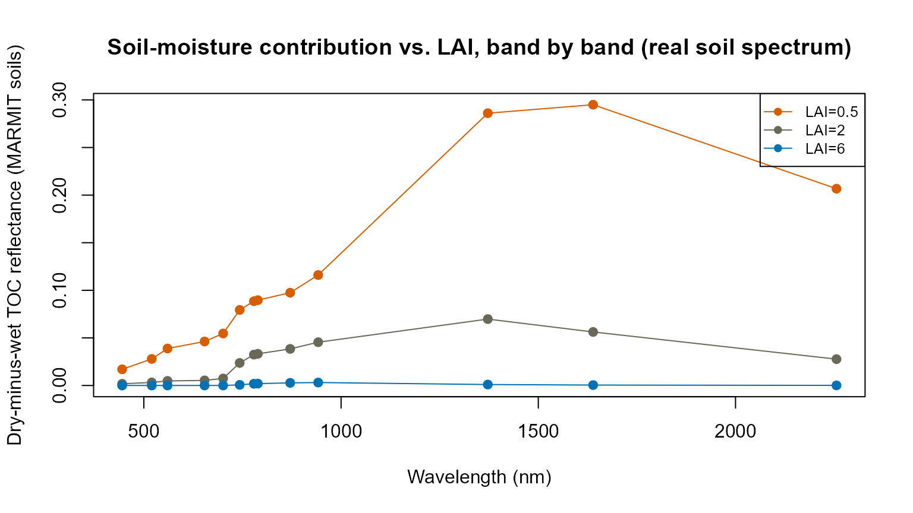

03. SPART: Soil-Plant-Atmosphere Radiative Transfer
t03-spart.Rmd
library(ToolsRTM)Tutorials 01-02 stopped at top-of-canopy (TOC) reflectance – what a
sensor would see immediately above the canopy, with no atmosphere in the
way. SPART() goes one step further: soil, canopy, AND
atmosphere, together, giving top-of-atmosphere (TOA) reflectance – what
a real satellite actually measures. It deserves its own page rather than
a paragraph inside a leaf/canopy comparison, because it represents a
more complete modelling chain, not just another canopy option. This page
stays focused on that unique chain (soil -> canopy -> atmosphere
-> TOA) – soil-moisture spectroscopy in depth is Tutorial 16’s job,
not this one’s.
Atmosphere
|
Incoming radiation
|
Soil ---------> Vegetation canopy
|
Canopy reflectance
|
Atmosphere
|
Top-of-atmosphere signalSPART couples three sub-models: BSM (Brightness-Shape-Moisture) for soil, fourSAIL for the vegetation canopy, and SMAC for atmospheric effects – the same three-model architecture SPART’s own reference implementation (Yang et al. 2020) uses.
3.1 Configure SPART
Inputs fall into five physical domains. inputsSPART (a
getLUT()-ready table, same pattern as
inputsPROSAIL) already groups them:
| Domain | Example columns | Notes |
|---|---|---|
| Leaf |
Cab, Car, Anth,
LMA, EWT, N, … |
Same as PROSPECT/fourSAIL (Tutorial 02) |
| Canopy structure |
LAI,
LIDFa/LIDFb/TypeLidf,
hspot
|
Same as fourSAIL |
| Soil (BSM) |
BSMBrightness, BSMlat,
BSMlon, SMp
|
See Section 3.3 – these are BSM’s real parameters |
| Geometry |
tts, tto, psi
|
Sun zenith, view zenith, relative azimuth |
| Atmosphere |
Pa, aot550, uo3,
uh2o, alt_m, Pa0
|
Air pressure, aerosol optical thickness, ozone, water vapour, altitude |
Full argument documentation lives at ?SPART – this page
focuses on how the pieces fit together, not an exhaustive parameter
list.
LUT <- as.data.frame(getLUT(inputs = ToolsRTM::inputsSPART, nLUT = 5, setseed = 1))
# inputsSPART only ships PROSPECT-PRO/-D columns -- add what other leaf
# models need too (same requirement as foursail()/SPART() itself).
LUT$Cs <- 0; LUT$fqe <- 0.01; LUT$Cx <- 0
LUT$cell.d <- 40; LUT$inter.c <- 0.045; LUT$baseline.abs <- 0.0006
LUT$leaf.thick <- 1.6; LUT$albino.abs <- 0; LUT$lign.cell <- 2; LUT$Nitrogen <- 1
# A realistic, sea-level, clear-sky atmosphere for the worked example below
# (getLUT()'s own default sampling range for the atmosphere columns is wide
# enough to occasionally draw physically implausible combinations -- see
# the note at the end of Section 3.2).
LUT$Pa <- 1000; LUT$aot550 <- 0.3246; LUT$uo3 <- 0.3480; LUT$uh2o <- 1.4116
LUT$alt_m <- 0; LUT$Pa0 <- 1000
# BSM soil, at its own shipped defaults (Section 3.3 varies these on purpose)
LUT$BSMBrightness <- 0.5; LUT$BSMlat <- 25; LUT$BSMlon <- 45; LUT$SMp <- 153.2 Run a baseline simulation
sim <- suppressWarnings(SPART(inputLUT = LUT[1, ], CanopyModel = "fourSAIL",
LeafModel = "PROSPECT-PRO",
sensor.i = ToolsRTM::Sentinel2A.MSI,
rsoil = NULL, get.plots = FALSE))
names(sim$output) # wave, rad.toa, rfl.toa, rfl.toc, rfl.toc.BRDF -- already at Sentinel-2A's own bands
#> [1] "wave" "rad.toa" "rfl.toa" "rfl.toc" "rfl.toc.BRDF"Unlike foursail(), SPART returns output already
convolved to the chosen sensor’s bands (sensor.i) – there
is no separate “simulate native, then convolve” step (Tutorial 07 covers
convolution for foursail()/inform() output,
which stays at 1nm resolution).
plot(sim$output$wave, sim$output$rfl.toc.BRDF, type = "o", pch = 19, col = "#0072B2",
ylim = c(0, max(sim$output$rfl.toc.BRDF, sim$output$rfl.toa)),
xlab = "Wavelength (nm)", ylab = "Reflectance", main = "SPART: TOC vs. TOA (Sentinel-2A bands)")
lines(sim$output$wave, sim$output$rfl.toa, type = "o", pch = 19, col = "#D55E00")
legend("topright", c("TOC (canopy)", "TOA (satellite)"), col = c("#0072B2", "#D55E00"), pch = 19, lty = 1)
diff_atm <- sim$output$rfl.toa - sim$output$rfl.toc.BRDF
plot(sim$output$wave, diff_atm, type = "o", pch = 19, col = "#CC79A7",
xlab = "Wavelength (nm)", ylab = expression(Delta*R[atm] == R[TOA] - R[TOC]),
main = "Atmospheric contribution: TOA minus TOC")
abline(h = 0, lty = 2, col = "grey50")
The dip near 942nm and the near-total collapse near 1372nm are real
atmospheric water-vapour absorption bands – present in the TOA curve but
absent from TOC, exactly what real atmospheric correction has to deal
with; the diff plot above makes this quantitative: the atmosphere
adds reflectance in the visible (positive
,
mostly Rayleigh/ aerosol path radiance) and removes it in the
water-vapour/near-infrared bands (negative
,
absorption), rather than shifting the whole spectrum uniformly.
A note on getLUT()’s atmosphere sampling:
at the wide default ranges inputsSPART samples from, some
random rows combine a high aot550 (aerosol loading) with a
high alt_m (altitude) – a combination SMAC’s atmospheric
correction doesn’t handle gracefully, producing negative (physically
meaningless) TOA reflectance. Always sanity-check
range(sim$output$rfl.toa) after a random draw; the fixed,
realistic sea-level clear-sky atmosphere set in Section 3.1 above avoids
this for the rest of this page.
3.3 Soil contribution
Physically, a sparse canopy should let more soil show through than a
dense one. A real implementation gap, found and fixed while
building this page:
inputsSPART/?SPART used to document a
psoil column, but SPART()’s BSM soil path
(triggered whenever rsoil = NULL) never read it – and it
couldn’t have, because psoil isn’t actually a BSM parameter
at all. psoil is a PROSAIL/4SAIL
soil-brightness-mixing parameter (interpolating between a fixed
dry and a fixed wet reference spectrum); BSM (Brightness-Shape-Moisture)
is a different, more mechanistic soil model with its own four real
parameters – BSMBrightness, BSMlat,
BSMlon (spectral shape), and SMp (soil
moisture volume %). SPART() used to hardcode all four
internally
(BSMBrightness = 0.5, BSMlat = 25, BSMlon = 45, SMp = 15)
regardless of what was in the LUT. Both are now fixed:
SPART() reads these four columns from inputLUT
when present (falling back to the same defaults otherwise, so old code
is unaffected), and inputsSPART now ships all four as real,
sampleable parameters.
A sensitivity test showing each BSM parameter’s real effect
run1 <- function(row) suppressWarnings(SPART(inputLUT = row, CanopyModel = "fourSAIL", LeafModel = "PROSPECT-PRO",
sensor.i = ToolsRTM::Sentinel2A.MSI, rsoil = NULL, get.plots = FALSE))
base_row <- LUT[1, ]; base_row$LAI <- 1 # sparse-ish canopy so soil shows through
bsm_params <- list(BSMBrightness = c(0.2, 0.5, 0.8), BSMlat = c(20, 25, 40),
BSMlon = c(45, 45, 65), SMp = c(5, 15, 55))
cat("NIR band (789nm) TOC reflectance as each BSM parameter varies (others at their default):\n")
#> NIR band (789nm) TOC reflectance as each BSM parameter varies (others at their default):
for (p in names(bsm_params)) {
vals <- bsm_params[[p]]
outs <- sapply(vals, function(v) { r <- base_row; r[[p]] <- v; run1(r)$output$rfl.toc.BRDF[8] })
cat(sprintf(" %-14s %s -> %s\n", p, paste(vals, collapse = " / "), paste(round(outs, 4), collapse = " / ")))
}
#> BSMBrightness 0.2 / 0.5 / 0.8 -> 0.2487 / 0.353 / 0.476
#> BSMlat 20 / 25 / 40 -> 0.3268 / 0.353 / 0.4277
#> BSMlon 45 / 45 / 65 -> 0.353 / 0.353 / 0.3671
#> SMp 5 / 15 / 55 -> 0.3039 / 0.353 / 0.2529Each of the four now has a real, verifiable effect – brighter soil
(BSMBrightness) and drier soil (lower SMp)
both raise reflectance, as expected;
BSMlat/BSMlon reshape the soil spectrum’s
spectral shape rather than its overall level, so their effect
at a single band is smaller but still real.
Flat spectra as a controlled diagnostic, BSM as the realistic soil demo
Two flat, arbitrary reflectance spectra are still useful for
isolating just the LAI effect (no confound from a soil
spectrum’s own spectral shape) – but they’re a diagnostic, not the main
soil story. The BSM sensitivity above is the realistic one;
ToolsRTM::get.marmit.rsoil() (Tutorial 16) is the realistic
one for moisture-driven soil spectra specifically.
soil_dark <- rep(0.08, 2001) # dark/wet-looking soil (diagnostic only)
soil_bright <- rep(0.30, 2001) # bright/dry-looking soil (diagnostic only)
lai_seq <- c(0.01, 0.5, 1, 2, 3, 4, 6) # 0.01 stands in for LAI=0 -- foursail's
# internal spline needs at least one point
soil_effect_bands <- function(lai) {
row_i <- base_row; row_i$LAI <- lai
d <- suppressWarnings(SPART(inputLUT = row_i, CanopyModel = "fourSAIL", LeafModel = "PROSPECT-PRO",
sensor.i = ToolsRTM::Sentinel2A.MSI, rsoil = soil_dark, get.plots = FALSE))
b <- suppressWarnings(SPART(inputLUT = row_i, CanopyModel = "fourSAIL", LeafModel = "PROSPECT-PRO",
sensor.i = ToolsRTM::Sentinel2A.MSI, rsoil = soil_bright, get.plots = FALSE))
b$output$rfl.toc.BRDF - d$output$rfl.toc.BRDF
}
soil_mat <- sapply(lai_seq, soil_effect_bands) # bands x LAI
rownames(soil_mat) <- sim$output$wave
colnames(soil_mat) <- paste0("LAI=", lai_seq)
knitr::kable(round(soil_mat, 3))| LAI=0.01 | LAI=0.5 | LAI=1 | LAI=2 | LAI=3 | LAI=4 | LAI=6 | |
|---|---|---|---|---|---|---|---|
| 445 | 0.217 | 0.103 | 0.048 | 0.011 | 0.002 | 0.001 | 0.000 |
| 520 | 0.217 | 0.107 | 0.052 | 0.012 | 0.003 | 0.001 | 0.000 |
| 560 | 0.217 | 0.110 | 0.055 | 0.014 | 0.003 | 0.001 | 0.000 |
| 654 | 0.217 | 0.107 | 0.052 | 0.012 | 0.003 | 0.001 | 0.000 |
| 701 | 0.217 | 0.114 | 0.059 | 0.015 | 0.004 | 0.001 | 0.000 |
| 743 | 0.218 | 0.150 | 0.101 | 0.044 | 0.019 | 0.008 | 0.001 |
| 779 | 0.219 | 0.157 | 0.112 | 0.057 | 0.028 | 0.014 | 0.003 |
| 789 | 0.219 | 0.158 | 0.113 | 0.058 | 0.029 | 0.014 | 0.003 |
| 871 | 0.219 | 0.160 | 0.116 | 0.061 | 0.032 | 0.017 | 0.004 |
| 942 | 0.219 | 0.160 | 0.116 | 0.061 | 0.032 | 0.016 | 0.004 |
| 1372 | 0.218 | 0.142 | 0.090 | 0.034 | 0.012 | 0.004 | 0.000 |
| 1639 | 0.218 | 0.131 | 0.076 | 0.025 | 0.008 | 0.002 | 0.000 |
| 2256 | 0.217 | 0.114 | 0.058 | 0.015 | 0.004 | 0.001 | 0.000 |
matplot(sim$output$wave, soil_mat, type = "o", pch = 19, lty = 1,
col = colorRampPalette(c("#D55E00", "#0072B2"))(length(lai_seq)),
xlab = "Wavelength (nm)", ylab = "Bright-minus-dark TOC reflectance",
main = "Soil brightness contribution vs. LAI, band by band")
legend("topright", colnames(soil_mat), col = colorRampPalette(c("#D55E00", "#0072B2"))(length(lai_seq)),
lty = 1, pch = 19, cex = 0.7, ncol = 2)
Band-by-band, not just averaged, and the picture is more nuanced than
a single “visible + NIR” story: at near-bare canopy (LAI=0.01) the
bright-minus-dark difference is almost flat across the whole spectrum
(0.217-0.219 at every band) – soil so completely dominates the signal
that wavelength barely matters yet. As soon as some canopy is present
(LAI=0.5-2), the effect becomes clearly wavelength-dependent: moderate
in the visible (445-701nm), strongest in the red-edge/NIR (743-942nm –
roughly 1.4-1.5x the visible bands at LAI=0.5-1), and still appreciable
– though below the NIR peak – in the near-SWIR bands (1372nm, 1639nm);
only the longest SWIR band here (2256nm) falls back to visible-like
levels. At every band the effect then decreases progressively with LAI,
and is essentially gone (<0.004 everywhere) by LAI=6. The
contribution of the soil background is spectrally dependent, not a fixed
“these bands only” rule – and it shrinks toward zero across the
whole spectrum, at different rates per band, as the canopy closes. One
caveat worth repeating: this comparison uses two flat, artificial
reference soils (rsoil = 0.08 vs 0.30) chosen
specifically to isolate the LAI effect cleanly, so it demonstrates
canopy masking x wavelength, not the spectral response of a
real soil. The BSM sensitivity test above is one realistic alternative;
the MARMIT demo right below is the other, and shows a different (and in
places stronger) spectral pattern once the soil spectrum itself has real
physics behind it.
From flat brightness to a real soil spectrum: MARMIT wet vs. dry, across LAI
The BSM sensitivity test above already showed real soil parameters
mattering; this demo goes one step further and asks a
soil-moisture question directly, the same way Tutorial 16 does
but carried through SPART()’s full TOC output at Sentinel-2
bands: swap rsoil for a measured dry-vs-wet soil pair from
ToolsRTM::get.marmit.rsoil() (Tutorial 16), instead of the
two flat reference levels above, and sweep the same three LAI values low
to high.
dry_soil_m <- get.marmit.rsoil(database = "Bablet_2016", id = 1, L = 0.001, eps = 0.05, wl.out = 400:2400)
wet_soil_m <- get.marmit.rsoil(database = "Bablet_2016", id = 1, L = 0.15, eps = 1.0, wl.out = 400:2400)
lai_seq2 <- c(0.5, 2, 6)
marmit_effect_bands <- function(lai) {
row_i <- base_row; row_i$LAI <- lai
d <- suppressWarnings(SPART(inputLUT = row_i, CanopyModel = "fourSAIL", LeafModel = "PROSPECT-PRO",
sensor.i = ToolsRTM::Sentinel2A.MSI, rsoil = dry_soil_m$rsoil.wet, get.plots = FALSE))
w <- suppressWarnings(SPART(inputLUT = row_i, CanopyModel = "fourSAIL", LeafModel = "PROSPECT-PRO",
sensor.i = ToolsRTM::Sentinel2A.MSI, rsoil = wet_soil_m$rsoil.wet, get.plots = FALSE))
d$output$rfl.toc.BRDF - w$output$rfl.toc.BRDF
}
marmit_mat <- sapply(lai_seq2, marmit_effect_bands)
rownames(marmit_mat) <- sim$output$wave
colnames(marmit_mat) <- paste0("LAI=", lai_seq2)
knitr::kable(round(marmit_mat, 3))| LAI=0.5 | LAI=2 | LAI=6 | |
|---|---|---|---|
| 445 | 0.017 | 0.002 | 0.000 |
| 520 | 0.028 | 0.003 | 0.000 |
| 560 | 0.039 | 0.005 | 0.000 |
| 654 | 0.046 | 0.005 | 0.000 |
| 701 | 0.055 | 0.007 | 0.000 |
| 743 | 0.079 | 0.024 | 0.001 |
| 779 | 0.089 | 0.032 | 0.002 |
| 789 | 0.090 | 0.033 | 0.002 |
| 871 | 0.097 | 0.038 | 0.003 |
| 942 | 0.116 | 0.045 | 0.003 |
| 1372 | 0.286 | 0.070 | 0.001 |
| 1639 | 0.295 | 0.056 | 0.000 |
| 2256 | 0.207 | 0.028 | 0.000 |
cols_lai2 <- colorRampPalette(c("#D55E00", "#0072B2"))(length(lai_seq2))
matplot(sim$output$wave, marmit_mat, type = "o", pch = 19, lty = 1, col = cols_lai2,
xlab = "Wavelength (nm)", ylab = "Dry-minus-wet TOC reflectance (MARMIT soils)",
main = "Soil-moisture contribution vs. LAI, band by band (real soil spectrum)")
legend("topright", colnames(marmit_mat), col = cols_lai2, lty = 1, pch = 19, cex = 0.8)
Now soil water absorption physics, not just an arbitrary brightness offset, is doing the work: the bare dry-vs-wet soil spectra themselves already differ far more in the SWIR (0.47 vs 0.03 at 1639nm, 0.51 vs 0.02 at 2256nm) than in the visible (0.08 vs 0.04 at 445nm) – MARMIT’s water-absorption features live in the SWIR, not the visible. That shows up directly in the TOC signal: at LAI=0.5 the SWIR-I bands (1372nm, 1639nm) carry the largest soil-moisture contribution of the whole spectrum (0.286, 0.295) – larger even than the red-edge/NIR peak from the flat-brightness demo above – while the visible bands stay comparatively small (0.017-0.055). As LAI rises to 2 the SWIR-I advantage narrows (0.070, 0.056, still above the visible bands) and by LAI=6 the whole spectrum has collapsed to near zero, same as the brightness demo. Two soils, two different stories: flat brightness peaks in the red-edge/NIR; a physically realistic moisture contrast peaks in the SWIR – both point to the same underlying rule, that the soil background’s spectral fingerprint gets progressively and unevenly erased as the canopy closes, but which bands carry that fingerprint depends on what is actually varying in the soil.
3.4 Atmospheric contribution, independently by driver
Section 3.2’s TOA-TOC diff plot showed the atmosphere’s total effect. Which atmospheric variable drives that, and where in the spectrum, varies a lot:
atmos_vars <- list(aot550 = c(0.05, 0.3246, 1.0), uh2o = c(0.5, 1.4116, 4.0), uo3 = c(0.1, 0.3480, 1.0))
for (v in names(atmos_vars)) {
vals <- atmos_vars[[v]]
toa <- sapply(vals, function(x) { r <- LUT[1, ]; r[[v]] <- x; run1(r)$output$rfl.toa })
rownames(toa) <- sim$output$wave
colnames(toa) <- paste0(v, "=", vals)
cat("\n", v, "-- TOA reflectance by band:\n")
print(round(toa, 3))
}
#>
#> aot550 -- TOA reflectance by band:
#> aot550=0.05 aot550=0.3246 aot550=1
#> 445 0.108 0.118 0.145
#> 520 0.085 0.093 0.122
#> 560 0.068 0.074 0.100
#> 654 0.036 0.043 0.071
#> 701 0.059 0.063 0.083
#> 743 0.282 0.268 0.243
#> 779 0.379 0.358 0.315
#> 789 0.367 0.348 0.304
#> 871 0.416 0.393 0.342
#> 942 0.129 0.122 0.106
#> 1372 0.002 0.002 0.001
#> 1639 0.102 0.099 0.095
#> 2256 0.016 0.017 0.019
#>
#> uh2o -- TOA reflectance by band:
#> uh2o=0.5 uh2o=1.4116 uh2o=4
#> 445 0.118 0.118 0.118
#> 520 0.093 0.093 0.093
#> 560 0.074 0.074 0.074
#> 654 0.043 0.043 0.042
#> 701 0.064 0.063 0.060
#> 743 0.273 0.268 0.258
#> 779 0.360 0.358 0.354
#> 789 0.356 0.348 0.332
#> 871 0.394 0.393 0.393
#> 942 0.191 0.122 0.059
#> 1372 0.008 0.002 0.000
#> 1639 0.099 0.099 0.099
#> 2256 0.017 0.017 0.016
#>
#> uo3 -- TOA reflectance by band:
#> uo3=0.1 uo3=0.348 uo3=1
#> 445 0.118 0.118 0.117
#> 520 0.095 0.093 0.090
#> 560 0.078 0.074 0.064
#> 654 0.044 0.043 0.040
#> 701 0.063 0.063 0.061
#> 743 0.269 0.268 0.264
#> 779 0.358 0.358 0.358
#> 789 0.348 0.348 0.348
#> 871 0.393 0.393 0.393
#> 942 0.122 0.122 0.122
#> 1372 0.002 0.002 0.002
#> 1639 0.099 0.099 0.099
#> 2256 0.017 0.017 0.017aot550 (aerosol loading) shifts mainly the visible bands
(445-654nm, rising with more aerosol – more path radiance/scattering);
uh2o (water vapour) is almost invisible outside the two
water-absorption bands (942nm, 1372nm) where it dominates completely;
uo3 (ozone)’s effect is small and concentrated around 560nm
(the Chappuis band). Different gases, different spectral fingerprints –
a single “atmosphere on/off” comparison (Section 3.2) can’t show this,
only a per-driver sweep can.
3.5 Geometry
tts (sun zenith), tto (view zenith), and
psi (relative azimuth) all feed into fourSAIL’s BRDF term
inside SPART, the same way they do in Compute_BRF()
(Tutorial 01) – this is what makes reflectance direction-dependent
rather than a single fixed number per surface. inputsSPART
fixes tts = 0 by default (sun straight overhead), which by
simple geometric symmetry makes psi irrelevant (there’s no
“relative” direction to a sun with no azimuth of its own) – so this
section fixes tts = 30 instead, specifically to let
tto and psi show a real effect:
geom_row <- LUT[1, ]; geom_row$tts <- 30
cat("psi sweep at tto=20 deg (NIR, band 8 = 789nm):\n")
#> psi sweep at tto=20 deg (NIR, band 8 = 789nm):
for (v in c(0, 90, 180)) {
r <- geom_row; r$tto <- 20; r$psi <- v
cat(" psi=", v, "->", round(run1(r)$output$rfl.toc.BRDF[8], 4), "\n")
}
#> psi= 0 -> 0.395
#> psi= 90 -> 0.3851
#> psi= 180 -> 0.3769
cat("tto sweep at psi=0 (principal plane, toward the hotspot; NIR, band 8):\n")
#> tto sweep at psi=0 (principal plane, toward the hotspot; NIR, band 8):
for (v in c(0, 15, 30)) {
r <- geom_row; r$tto <- v; r$psi <- 0
cat(" tto=", v, "->", round(run1(r)$output$rfl.toc.BRDF[8], 4), "\n")
}
#> tto= 0 -> 0.3845
#> tto= 15 -> 0.3921
#> tto= 30 -> 0.4012Both are real BRDF effects: moving psi away from 0 deg
(away from the sun’s own azimuth, i.e. away from the backscatter/hotspot
direction) lowers NIR reflectance here; increasing
tto toward tts (staying in the backscatter
direction, psi=0) raises it, approaching the
hotspot. This specific direction (higher tto ->
higher reflectance) is a property of this geometry
configuration (backscatter side, psi=0, this
LAI/LIDF), not a general rule – on the forward-scatter side
(psi near 180) the same tto increase can lower
reflectance instead. A Lambertian (direction-independent) assumption
would miss all of this.
3.6 A small multi-factor sensitivity comparison
Which of these actually moves the TOA signal the most? One factor at a time, same NIR band, same low/mid/high bracketing used throughout this page – LAI and canopy/soil trait changes side by side with atmospheric ones, extending Tutorial 10’s spectral sensitivity analysis to the full TOA chain:
factors <- list(LAI = c(0.5, 3, 6), Cab = c(10, 40, 75), BSMBrightness = c(0.2, 0.5, 0.8),
aot550 = c(0.05, 0.3246, 1.0), uh2o = c(0.5, 1.4116, 4.0))
sens_tbl <- do.call(rbind, lapply(names(factors), function(fac) {
vals <- factors[[fac]]
outs <- sapply(vals, function(v) { r <- LUT[1, ]; r[[fac]] <- v; run1(r)$output$rfl.toa[8] })
data.frame(factor = fac, low = outs[1], mid = outs[2], high = outs[3], range = max(outs) - min(outs))
}))
knitr::kable(sens_tbl[order(-sens_tbl$range), ], row.names = FALSE, digits = 4)| factor | low | mid | high | range |
|---|---|---|---|---|
| aot550 | 0.3674 | 0.3477 | 0.3040 | 0.0633 |
| LAI | 0.3106 | 0.3406 | 0.3516 | 0.0410 |
| uh2o | 0.3563 | 0.3477 | 0.3323 | 0.0240 |
| BSMBrightness | 0.3387 | 0.3477 | 0.3592 | 0.0205 |
| Cab | 0.3477 | 0.3477 | 0.3477 | 0.0000 |
LAI dominates NIR TOA sensitivity here, but aot550
(aerosol) is not far behind – comparable to, or larger than, moderate
soil-brightness or water-vapour changes. Cab shows
essentially zero NIR sensitivity, which is exactly right
physically: chlorophyll absorbs strongly in the visible, not the NIR,
where structure (LAI, LIDF) dominates instead – useful confirmation that
the model’s spectral behaviour matches known leaf/canopy optics, not an
oversight.
3.7 Why the TOC/TOA distinction matters for inversion
SPART slots into the same hybrid-inversion framework the rest of this series builds (Tutorials 10-13) – but which reflectance domain a model is trained on matters enormously, because real satellite data is always TOA, never TOC:
LUT150 <- as.data.frame(getLUT(inputs = ToolsRTM::inputsSPART, nLUT = 150, setseed = 1))
# Fix only atmosphere/BSM-soil (a realistic single-scene assumption, same as the
# rest of this page) -- leaf/canopy traits vary naturally across all 150 rows,
# same as a real inversion LUT (Tutorials 11-12). Fixing every non-Cab column
# (an earlier version of this chunk did) leaves only one varying predictor
# against 13 highly collinear bands -- a degenerate, overfit regression, not a
# realistic inversion.
for (col in c("Pa", "aot550", "uo3", "uh2o", "alt_m", "Pa0", "BSMBrightness", "BSMlat", "BSMlon", "SMp")) {
LUT150[[col]] <- LUT[[col]][1]
}
sims <- lapply(seq_len(nrow(LUT150)), function(i) run1(LUT150[i, ]))
toc_mat <- t(sapply(sims, function(s) s$output$rfl.toc.BRDF))
toa_mat <- t(sapply(sims, function(s) s$output$rfl.toa))
colnames(toc_mat) <- colnames(toa_mat) <- paste0("B", seq_len(ncol(toc_mat)))
set.seed(1)
train_idx <- sample(seq_len(nrow(LUT150)), size = round(0.7 * nrow(LUT150)))
test_idx <- setdiff(seq_len(nrow(LUT150)), train_idx)
cab <- LUT150$Cab
fit_toc <- lm(cab[train_idx] ~ ., data = as.data.frame(toc_mat[train_idx, ]))
fit_toa <- lm(cab[train_idx] ~ ., data = as.data.frame(toa_mat[train_idx, ]))
r2 <- function(y, p) 1 - sum((y - p)^2) / sum((y - mean(y))^2)
rmse <- function(y, p) sqrt(mean((y - p)^2))
truth <- cab[test_idx]
pred_ideal <- predict(fit_toc, newdata = as.data.frame(toc_mat[test_idx, ])) # TOC model, TOC data
pred_correct <- predict(fit_toa, newdata = as.data.frame(toa_mat[test_idx, ])) # TOA model, TOA data
pred_domaingap <- predict(fit_toc, newdata = as.data.frame(toa_mat[test_idx, ])) # TOC model misapplied to TOA data
data.frame(
scenario = c("TOC-trained model on TOC data (best case, no atmosphere)",
"TOA-trained model on TOA data (correct real-world approach)",
"TOC-trained model applied to TOA data (the domain-gap mistake)"),
R2 = round(c(r2(truth, pred_ideal), r2(truth, pred_correct), r2(truth, pred_domaingap)), 3),
RMSE = round(c(rmse(truth, pred_ideal), rmse(truth, pred_correct), rmse(truth, pred_domaingap)), 2)
) |> knitr::kable()| scenario | R2 | RMSE |
|---|---|---|
| TOC-trained model on TOC data (best case, no atmosphere) | 0.862 | 6.36 |
| TOA-trained model on TOA data (correct real-world approach) | 0.867 | 6.25 |
| TOC-trained model applied to TOA data (the domain-gap mistake) | -2.391 | 31.55 |
That’s not a small effect: a Cab-inversion model trained on TOC
reflectance and (incorrectly) applied to TOA reflectance from a real
satellite collapses to a negative R² – worse than just
predicting the mean every time – while a model trained on TOA
reflectance in the first place performs about as well as the
no-atmosphere ideal. This is the concrete, load-bearing reason
SPART() exists in this package: any LUT built with plain
foursail()/inform() for training an inversion
model that will later see real satellite reflectance needs either an
atmospheric-correction step on the real data, or – what
SPART() provides directly – a LUT simulated all the way to
TOA in the first place. Not developed further here (train/test mechanics
are Tutorial 11’s job) – this section exists to make the reason
concrete before that tutorial’s own worked example.
Parameter LUT
|
v
SPART simulations (already at sensor bands, TOC or TOA)
|
v
Synthetic EO training dataset -- must match what you'll invert later
|
v
ML inversion
|
v
Vegetation traits3.8 SPART and satellite observations
Because SPART already outputs at a chosen sensor’s bands, moving from
simulation to a realistic EO-like observation needs no separate
convolution step – just pick sensor.i. Only sensors SPART
actually supports (bundled objects in ToolsRTM) are listed
here:
spart_sensors <- c("LANDSAT4.TM", "LANDSAT5.TM", "LANDSAT7.ETM", "LANDSAT8.OLI",
"Sentinel2A.MSI", "Sentinel2B.MSI", "Sentinel3A.OLCI",
"Sentinel3B.OLCI", "TerraAqua.MODIS")
s_modis <- suppressWarnings(SPART(inputLUT = LUT[1, ], CanopyModel = "fourSAIL", LeafModel = "PROSPECT-PRO",
sensor.i = ToolsRTM::TerraAqua.MODIS, rsoil = NULL, get.plots = FALSE))
cat("Sentinel-2A bands:", length(sim$output$wave), " -- MODIS bands:", length(s_modis$output$wave), "\n")
#> Sentinel-2A bands: 13 -- MODIS bands: 20Take-home message
Use plain
foursail()/foursail2()/inform()
(Tutorials 01-02, 04) when the question is about the canopy or leaf
itself and TOC reflectance is enough – it’s simpler, faster, and every
model in this package other than SPART works that way. Reach for
SPART() specifically when the question involves what a
satellite actually measures at TOA (atmospheric correction studies,
comparing simulations directly against uncorrected satellite products,
or – as Section 3.7 showed concretely – training an inversion model that
will later see real, uncorrected satellite data) – the extra
atmosphere/soil-BSM machinery is not needed otherwise.